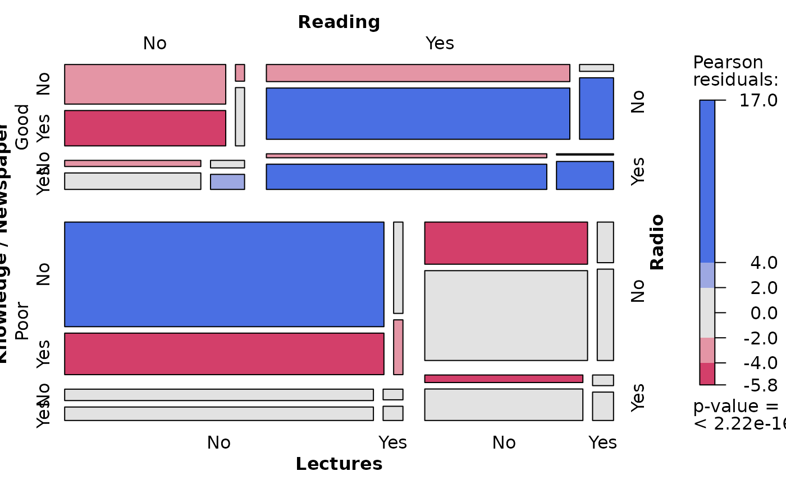
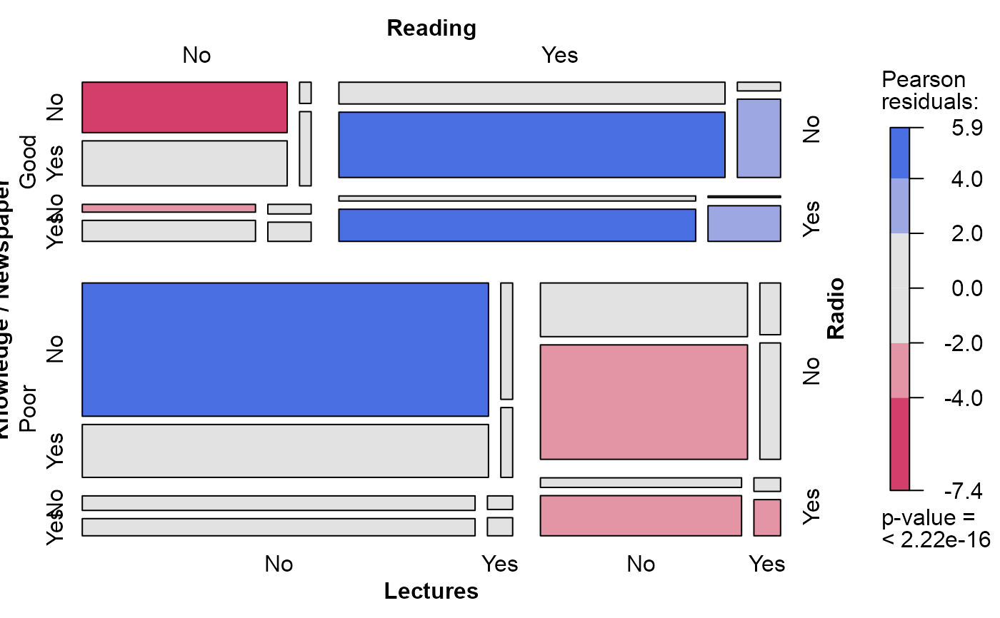
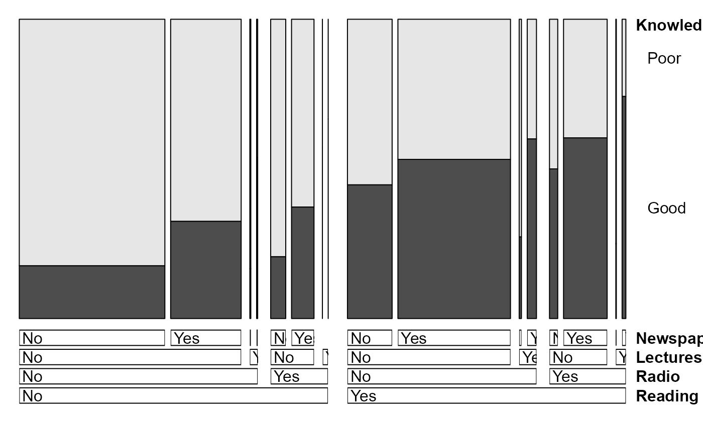
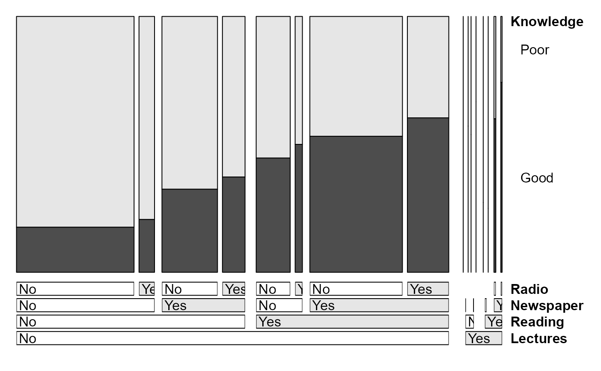
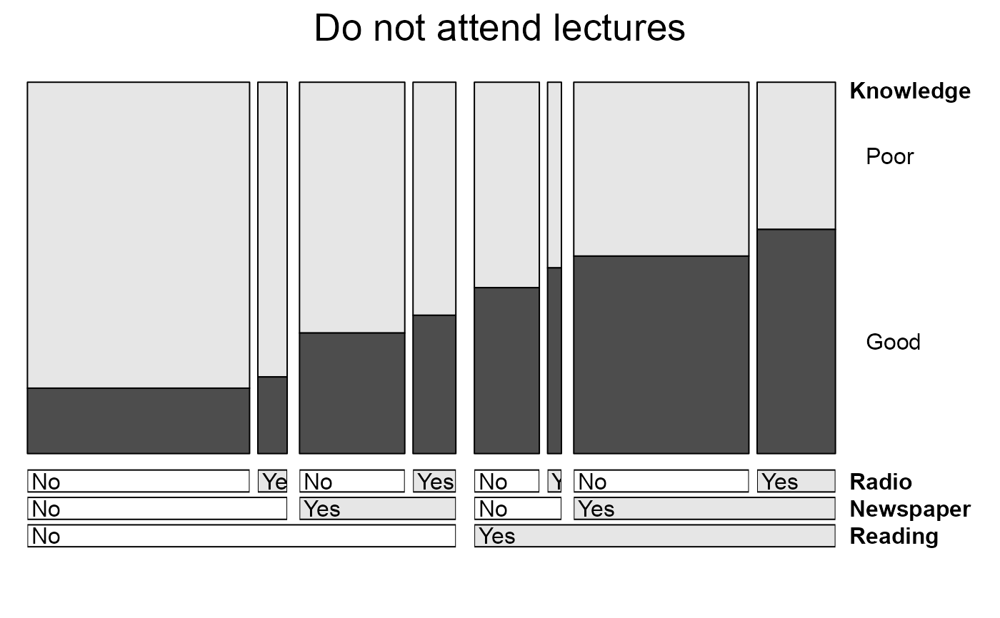
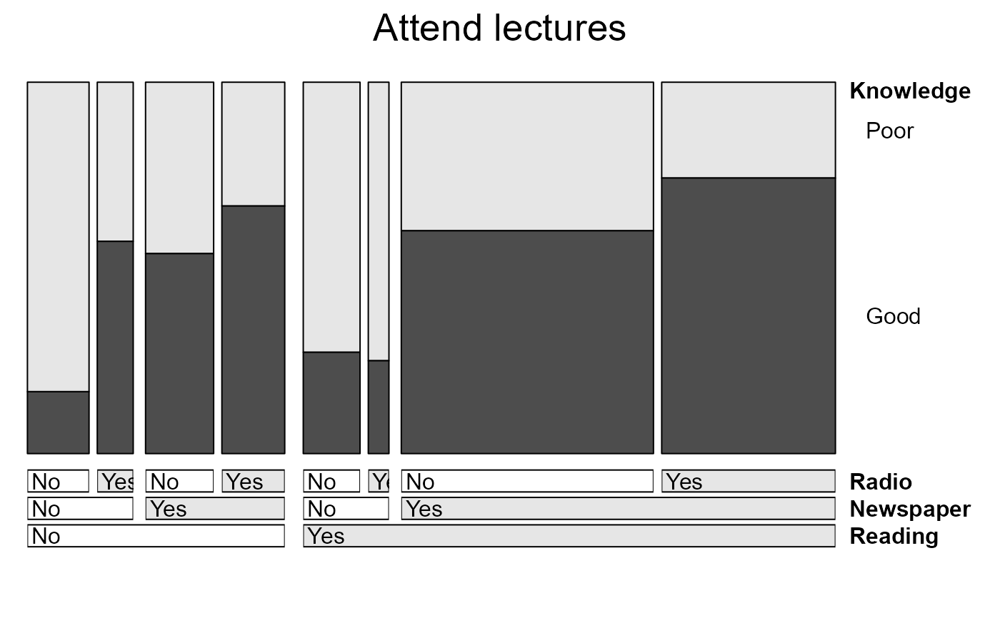

Sources of Knowledge of Cancer
Dyke.RdObservational data on a sample of 1729 individuals, cross-classified in a 2^5 table according to their sources of information (read newspapers, listen to the radio, do 'solid' reading, attend lectures) and whether they have good or poor knowledge regarding cancer. Knowledge of cancer is often treated as the response.
Usage
data(Dyke)Format
A 5-dimensional array resulting from cross-tabulating 5 variables for 1729 observations. The variable names and their levels are:
| No | Name | Levels |
| 1 | Knowledge | "Good", "Poor" |
| 2 | Reading | "No", "Yes" |
| 3 | Radio | "No", "Yes" |
| 4 | Lectures | "No", "Yes" |
| 5 | Newspaper | "No", "Yes" |
Source
Fienberg, S. E. (1980). The Analysis of Cross-Classified Categorical Data Cambridge, MA: MIT Press, p. 85, Table 5-6.
References
Dyke, G. V. and Patterson, H. D. (1952). Analysis of factorial arrangements when the data are proportions. Biometrics, 8, 1-12.
Lindsey, J. K. (1993). Models for Repeated Measurements Oxford, UK: Oxford University Press, p. 57.
Examples
data(Dyke)
# independence model
mosaic(Dyke, shade=TRUE)

# null model, Knowledge as response, independent of others
require(MASS)
dyke.mod0 <- loglm(~ Knowledge + (Reading * Radio * Lectures * Newspaper), data=Dyke)
dyke.mod0
#> Call:
#> loglm(formula = ~Knowledge + (Reading * Radio * Lectures * Newspaper),
#> data = Dyke)
#>
#> Statistics:
#> X^2 df P(> X^2)
#> Likelihood Ratio 216.2594 15 0
#> Pearson 207.5194 15 0
mosaic(dyke.mod0)

# view as doubledecker plot
Dyke <- Dyke[2:1,,,,] # make Good the highlighted value of Knowledge
doubledecker(Knowledge ~ ., data=Dyke)

# better version, with some options
doubledecker(Knowledge ~ Lectures + Reading + Newspaper + Radio,
data=Dyke,
margins = c(1,6, length(dim(Dyke)) + 1, 1),
fill_boxes=list(rep(c("white", gray(.90)),4))
)

# separate (conditional) plots for those who attend lectures and those who do not
doubledecker(Knowledge ~ Reading + Newspaper + Radio,
data=Dyke[,,,1,],
main="Do not attend lectures",
margins = c(1,6, length(dim(Dyke)) + 1, 1),
fill_boxes=list(rep(c("white", gray(.90)),3))
)

doubledecker(Knowledge ~ Reading + Newspaper + Radio,
data=Dyke[,,,2,],
main="Attend lectures",
margins = c(1,6, length(dim(Dyke)) + 1, 1),
fill_boxes=list(rep(c("white", gray(.90)),3))
)

drop1(dyke.mod0, test="Chisq")
#> Single term deletions
#>
#> Model:
#> ~Knowledge + (Reading * Radio * Lectures * Newspaper)
#> Df AIC LRT Pr(>Chi)
#> <none> 250.26
#> Knowledge 1 338.37 90.114 <2e-16 ***
#> Reading:Radio:Lectures:Newspaper 1 248.63 0.374 0.5406
#> ---
#> Signif. codes: 0 '***' 0.001 '**' 0.01 '*' 0.05 '.' 0.1 ' ' 1